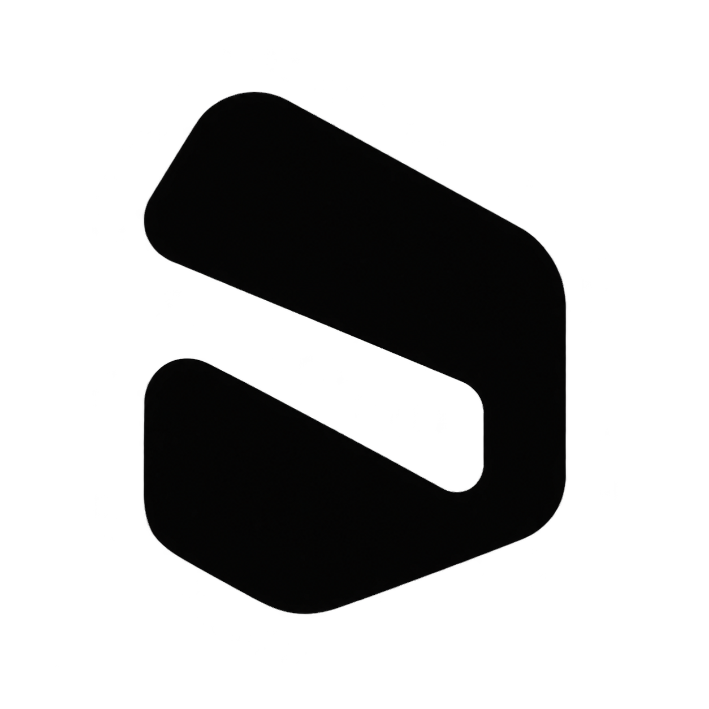
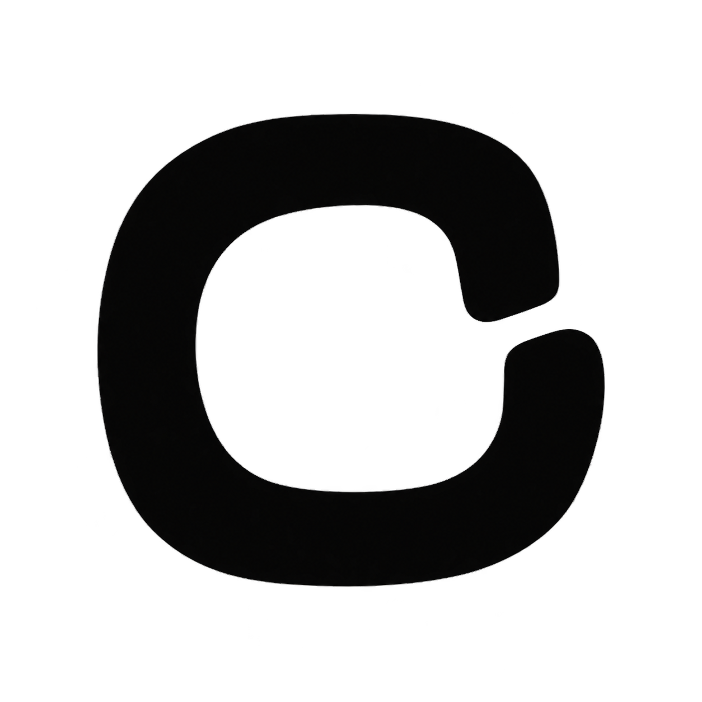
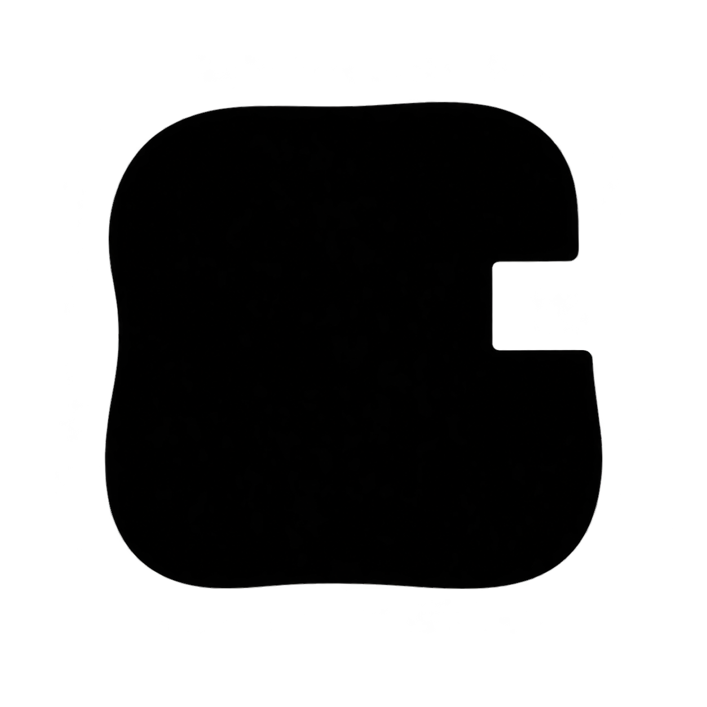

A · 折角FOLD
宽折面与一道斜向留白。轮廓有转折，也保留了一点动感。
16 px
24 px
32 px
48 px
Minimal + playful。三个独立方向，以及浏览器缩小后的实际显示。

宽折面与一道斜向留白。轮廓有转折，也保留了一点动感。

圆润的开口回环。轻巧、友好，但容易被读成字母 C。

饱满体块加一个缺口。最简单，也最依赖细致的比例调整。
小图以 16 / 24 / 32 / 48 CSS px 显示；请在浏览器 100% 缩放下比较。原图为 imagegen 生成的透明底单色草图，仍含轻微边缘杂色，尚未进行像素级定稿。
本页用于方向评审 · 图标原稿与完整 prompts 保存在同一目录